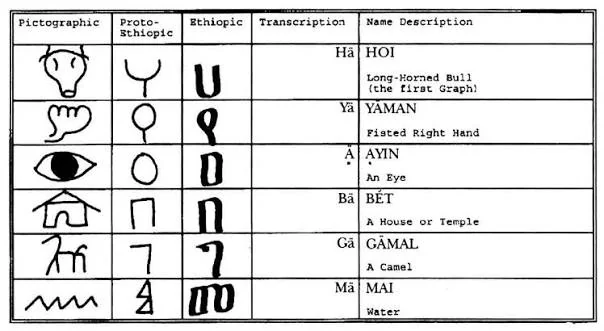
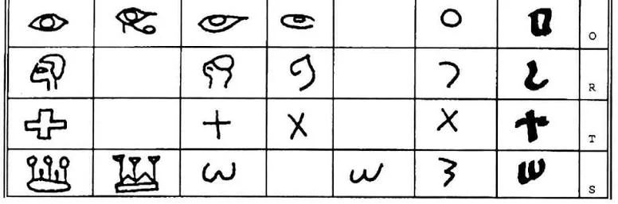
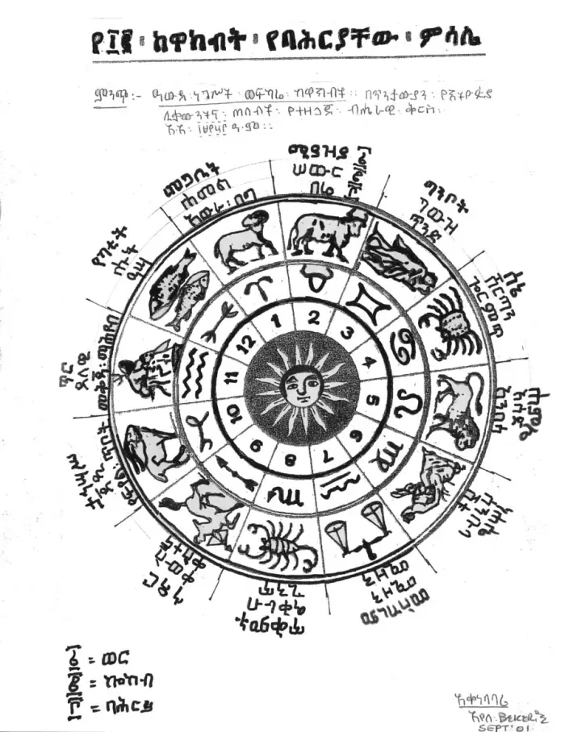
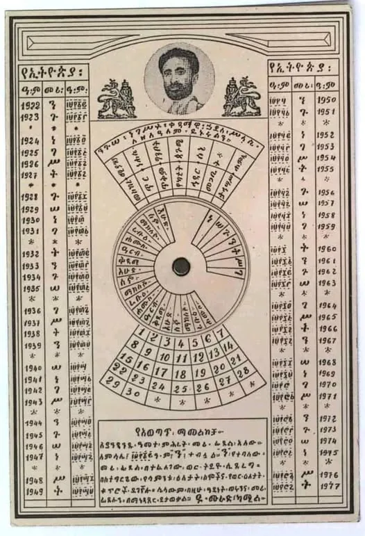

Five properties of the script
Ge'ez is treated as more than a set of sounds. The thesis combines five properties into one framework.
Recurrent neural network cipher built on the Ge'ez script
This site is the companion to Biruk Tesfaye Yohannes's M.Sc. thesis, Dilla University, 2019. It reads the Ge'ez script through five properties, picture, idea, calendar, number and syllable, and builds a recurrent neural network cipher on top of them.
Most of today's encryption rests on mathematics that new computing may weaken. The thesis looks for a different source: the structure of an old writing system. It models a cipher on the computational behaviour of Ge'ez with a recurrent neural network and evaluates it on key size, key type, key management and bit-level operation, alongside AES-128.
Research prototype. Not for protecting real data.
Each character runs through eight recursions of the network. Each recursion writes one 8-bit row, so every character becomes an 8×8 block.
Paste Ge'ez cipher output as hex or binary, or paste AES output together with its passphrase.
Each character's cipher block is its pixel shape, for English and Ge'ez letters alike. Click a data cell to flip it and the encryption updates. Columns 1–2 and row 8 are reserved flag bits.
Pictograph
At each step the network computes V = W·X + B and outputs 1 where V > 0. That output feeds into the next step as input.
| Step | Input X | Weight W | Bias B | V = W·X + B | Output |
|---|
Thesis chapter 1 argues that Ge'ez has five properties that make it suitable for computation. Chapter 3 builds the cipher model on top of them.
Ge'ez is treated as more than a set of sounds. The thesis combines five properties into one framework.
Following Scelta (2001) and Bekerie (1997), each graph began as an abstract picture of a living thing, a tool or a sky feature. Four steps turn a picture into a Ge'ez syllable:
The same signs appear in the neighbouring scripts of northeast Africa and the Red Sea. Each row follows one sign from its Egyptian picture to its Ge'ez letter.
| Sign | Egyptian | Meroitic | Sinaitic | Cretan linear | Meroitic linear | Proto-Ethiopic | Ethiopic |
|---|
The same principle runs through the history of the alphabet. Around 1850 BCE, workers in Sinai borrowed Egyptian pictures and gave each the sound that began its name in their own language. That Proto-Sinaitic script became Phoenician and South Arabian, and South Arabian became Ge'ez. Pick a letter to follow its line, and to see its relatives in the Greek and Latin alphabets.
Letters with a dashed border begin in South Arabian or in Ge'ez itself, so their line is shorter.
An abjad writes only consonants and leaves the reader to supply the vowels. Ge'ez became an abugida, where every letter carries its vowel. Follow one word, ንጉሠ, "king of", through the change.
Ayele Bekerie reads the Ethiopic letters as an African system rooted in Egyptian pictures, with pictographic, ideographic and numeric layers of meaning. The pictographs on this page follow his tables.
Ge'ez descends from the South Arabian script, which descends from Proto-Sinaitic, which in turn drew on Egyptian signs. Reviewers such as Peter Daniels accept that line but dispute several of Bekerie's direct comparisons between Ethiopic letters and particular hieroglyphs.
Both readings lead back to Egyptian pictures; they differ on the path. Sources: History of the alphabet, Ancient South Arabian script, Geʽez script, Daniels' review of Bekerie.


Beyond sound, root consonant classes are read as civic, spiritual or moral ideas in traditional Ethiopian interpretation.
Each class fills one week of each equinox in the fidel calendar. Highlighted weeks belong to the chosen theme.
| Root | 6th form | Root word | Meaning |
|---|---|---|---|
| በ | ብ | ቤት (Bèt) | Home, family and community dwelling. |
| የ | ይ | የማን (Yäman) | Right hand of fidelity, truth, justice and oath. |
| ገ | ግ | ገመል (Gämäl) | Resilience, trade routes and prosperity. |
| ነ | ን | ነሐስ (Nahas) | Bronze working, wisdom and healing. |
| ረ | ር | ርእስ (Re'es) | Head and leadership, as in Re'esa Mange'st, head of state. |
| ፈ | ፍ | አፍ (Äf) | Mouth, spoken truth and proclamation. |
The thesis reads the script as a solar calendar. The year has two 182-day equinox cycles, and the 182 syllographs map one-to-one onto the days of each cycle.
The horizontal line divides the year at the equinoxes. The upper half is Equinox 1 and the lower half is Equinox 2, 182 days each, 364 days in all.
Around each half run the 26 classes, one class for each week. The seven orders of a class fill the seven days of its week, so one pass through the fidel covers one equinox, and the second equinox repeats the alphabet from ሀ.
The highlighted letter is the class of the date picked in the calendar below.
| Order | Name | Vowel | Weekday | Role in the model |
|---|---|---|---|---|
| 1 | Ge'ez ግዕዝ | ä | Sunday እሑድ | State initialization, seed vector |
| 2 | Ka'eb ካዕብ | u | Monday ሰኑይ | Weight modulator W₁ |
| 3 | Salis ሣልስ | i | Tuesday ሠሉስ | Bias injection B₁ |
| 4 | Rab'e ራብዕ | a | Wednesday ረቡዕ | Cross-layer recursion tr3–tr4 |
| 5 | Hamis ኃምስ | é | Thursday ሐሙስ | Transposition and diffusion |
| 6 | Sadis ሳድስ | ə | Friday ዓርብ | Threshold activation |
| 7 | Sab'e ሳብዕ | o | Saturday ቀዳሚት ሰንበት | Feedback latch X[tr+1] = A[tr] |
The Ethiopian year has 12 months of 30 days and a short 13th month, ጳጉሜ, of 5 days (6 in a leap year). Laid on it, every day of the 364-day cycle carries one syllograph. መስከረም 1 to 7 is ሀ ሁ ሂ ሃ ሄ ህ ሆ, 8 to 14 is ለ ሉ ሊ ላ ሌ ል ሎ, and so on to ፐ on day 182, መጋቢት 2. On መጋቢት 3 the alphabet starts again from ሀ for the second equinox and ends on ጳጉሜ 4.
Because every month has 30 days, each month holds four class weeks and two days more. So each month begins two orders further on, the same two-step that moves the weekdays forward from month to month in the calendar dial below. Pick a date to see its letter.
Weeks run Monday to Sunday, as on Ethiopian wall calendars. Each month card also gives its Gregorian dates.
Ayele Bekerie's drawing of the twelve stars and their natures arranges the Ethiopian year in three rings: ፩ the month (ወር), ፪ the star (ኮከብ) and ፫ its nature (ባሕርይ). The count starts at ① መጋቢት, the month of the March equinox, with ሐመል, the Ram, and ends at ⑫ የካቲት with ሑት, the Fish. The natures repeat in fours: fire, earth, air, water.

Pick a date in the fidel calendar and the wheel turns to that date's month. Every Ethiopian month has 30 days, so a month holds about four class weeks of the fidel calendar. The thirteenth month, ጳጉሜ, has no star of its own.
The printed calendar card from the reign of Haile Selassie finds the weekday of any Ethiopian date with one turn of a paper disc. It rests on one fact: every month has 30 days, and 30 is 2 more than four weeks. So each month begins two weekdays after the month before, and months seven apart begin on the same weekday. The card's top fan pairs those months: መስከረም with ሚያዝያ, ጥቅምት with ግንቦት, and so on.
Below, the disc is unrolled into a strip. It turns by itself when you change the year.
Letters as read from the card. On the card's columns, ✱ marks a year of Luke (ዘመነ ሉቃስ), whose ጳጉሜ has six days, so the next year begins two weekdays later instead of one. The weekday rule from Bahire Hasab gives the same answer for every year without the card.

Each root consonant has a base value from 1 to 800. Across the seven orders the value grows linearly, giving a range of 1 to 5,600.
Base values 1–9 ሀ=1 ለ=2 ሐ=3 መ=4 ሠ=5 ረ=6 ሰ=7 ቀ=8 በ=9 10–90 ተ=10 ኀ=20 ነ=30 አ=40 ከ=50 ወ=60 ዐ=70 ዘ=80 የ=90 100–800 ደ=100 ገ=200 ጠ=300 ጰ=400 ጸ=500 ፀ=600 ፈ=700 ፐ=800 Value by order Value(fidel i, order j) = Base_i × j j = 1 … 7 Range 1 × 1 = 1 up to 800 × 7 = 5,600
Besides the letter values above, the script has its own twenty number signs: nine units, nine tens, ፻ for a hundred and ፼ for ten thousand. There is no zero. አልቦ, "nothing", is a word with no sign. Tap a sign to add it to the converter below.
The Geez Family table writes ten thousand as ፻፻, a hundred times a hundred, and builds every larger power the same way. Standard usage writes ፼ instead. Both forms are shown.
| Value | Table form, ፻ only | Standard form, ፼ | Name |
|---|
Generated by the rules above, following the Geez Family table. Spellings are made consistent, for example ዐሠርቱ throughout. The table also writes ወ between numerals in some compounds, such as ፻፲ወ፩ for 111.
| Numeral | In words | Value |
|---|
Source: Geez Family, የግእዝ አኃዝ.
Ge'ez is an abugida: each glyph carries its vowel. Mokshe fidelat are letters that sound alike in modern speech but carry different meanings.
| Ge'ez word | Amharic | English | Other meaning | Homophone pair |
|---|
The thesis describes the cipher as a deterministic finite automaton over the binary alphabet {0, 1}. At each recursion trₖ, k = 1 … 8:
V[i] = W[i] · X[i] + B[i] A[i] = 1 if V[i] > 0, else 0 X[k+1] = A[k] feedback C = A(tr1) ‖ A(tr2) ‖ … ‖ A(tr8) 64-bit block
Each character is an 8×8 grid. Columns 1–2 and row 8 are flag bits, set to 0. The remaining 42 bits hold the character's shape.
The thesis proposes the 64-bit weight matrix W and 64-bit bias matrix B as the key, for 128 bits per character, and suggests extending it to 512 bits by adding hidden layers.
The 182 classical syllographs, each one a column through the five properties of the script. Front to back the layers run from the letter as written today to its origin: syllographic, numeric, astrographic, ideographic and pictographic.
| # | Plain | Cell | Key | Rotor | Cipher | Cell |
|---|
The thesis's view of how the script developed, from its root form to the full syllabary, and how it compares with other African writing systems.
A person standing with arms raised, or the front of a lion. Linked with Psalm 68:31, "Ethiopia stretches her hands unto God".
Marks the 26th and final consonant class of the Ethiopic system.
| Latin | Ancient | Proto-Ethiopic | Classical | Name | Meaning |
|---|
| Pictograph | Proto-Ethiopic | Ethiopic | Sound | Name | Origin |
|---|
| Sound | Egyptian | Meroitic | Sinaitic | Cretan linear | Meroitic linear | Proto-Ethiopic | Ethiopic | Notes |
|---|